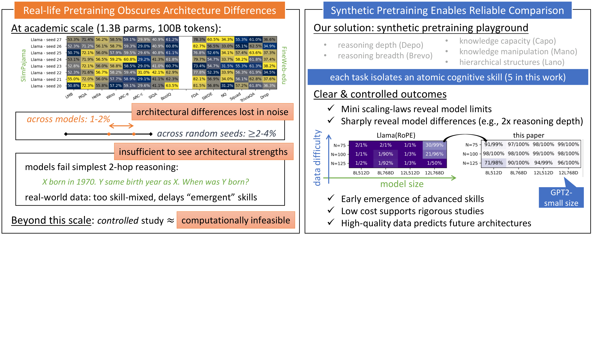

- Typical academic setup: 1.3B params, 100B tokens
- Random seed variation: 2–4% accuracy swings on standard benchmarks
- Architectural differences: only 1–2% — smaller than seed noise
- Even simplest 2-hop reasoning fails at this scale (all models guess randomly)
- Beyond this scale: controlled study ≈ computationally infeasible
The physicist’s solution: Instead of scaling up, scale down to a clean, synthetic environment where skills emerge reliably at GPT2-small size.

Real-world pretraining obscures architecture differences; synthetic pretraining enables clear, reproducible signal